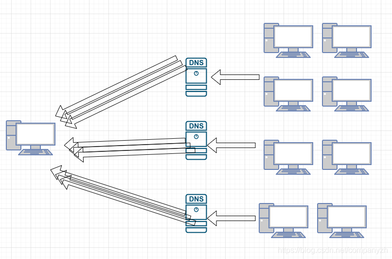
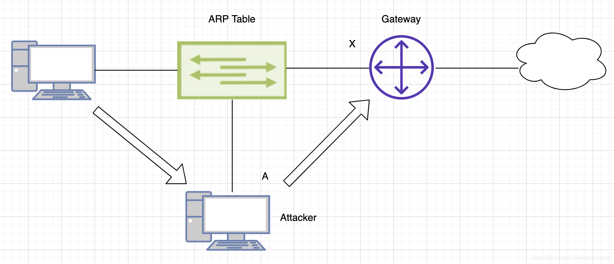

- 01 我应该站在谁的肩膀上 - OSI vs TCPIP模型.md.html
- 02 万丈高楼平地起- 物理层 + 数据链路层.md.html
- 03 OSI的灵魂就是我 - 网络层.md.html
- 04 要快还是要稳你说好了 - 传输层.md.html
- 05 是时候展现真正的技术了 - 应用层.md.html
- 06 重回小学课堂 - 二进制101.md.html
- 07 1+1 = 2吗？ - 二进制的计算.md.html
- 08 16进制又是个什么鬼？ - 16进制的讲解.md.html
- 09 我想有个家 - 什么是IP地址.md.html
- 10 我可是住二环的人 - IP地址的组成和分类.md.html
- 11 我已经没地方住了吗 - IPv6.md.html
- 12 向左还是向右 - IP路由.md.html
- 13 我能给你安全感 - TCP（一）.md.html
- 14 我那不为人知的秘密是什么 - TCP（二）.md.html
- 15 不问收没收到，就问快不快 - UDP.md.html
- 16 我为什么与众不同 - TCP高级篇（拥塞模型）.md.html
- 17 来，先看看我的家谱 - HTTP的身世.md.html
- 18 我都这么成功了，你却说我不行 - HTTP 的特点和缺点.md.html
- 19 我老了，让我儿子来吧 - HTTP2.md.html
- 20 稳重的大外甥 - HTTPS.md.html
- 21 HTTP的高级篇 - HTTPClient（Java）.md.html
- 22 想来我家，你自己查呀 - DNS.md.html
- 23 来的早，不如来得巧 - NAT.md.html
- 24 辛苦的邮政 - SMTP.md.html
- 25 你就是看不见我 - VPN.md.html
- 26 黑客的好帮手 - SSH.md.html
- 27 你可以得到我的心，却得不到我的人 - 物理安全设备.md.html
- 28 你怎么证明你就是你 - 身份验证和访问控制.md.html
- 29 我要怎么藏好我的考研资料 - 网络攻击（一）.md.html
- 30 我要怎么藏好我的考研资料 - 网络攻击（二）.md.html
- 31 如何保护我的考研资料 - 网络攻击防范.md.html
- 32 Linux网络安全 - 安全实战.md.html
- 33 结语.md.html
- 捐赠
30 我要怎么藏好我的考研资料 - 网络攻击（二）
DOS 攻击
我们这里来讲一下DOS（拒绝服务）攻击。DoS攻击是很久以前开始的，可以追溯到90年代中期，即Windows 95出来之后，就出现了DOS攻击，这是利用了Windows 95设备上的一个漏洞。这个漏洞就是你可以发送一条专门的ping消息，该消息中的有效负载包含“专门的“一个消息，这将导致Windows崩溃并给出著名的死亡蓝屏。这就是一种拒绝服务攻击（DOS Attack）。当然数十年前就已对此进行了修补，但这是最早在家用设备中流行的DOS攻击之一。另一种攻击类型是分布式拒绝服务攻击（Distributed DOS Attack），也可以简称为DDOS。分布式拒绝服务攻击有多种类型。其中之一，我们要做的是向正在攻击的设备发送ping消息，但是ping消息的目标IP地址和源IP地址都是该设备，当我们这样做时，我们将其称为反射性DDoS攻击，这意味着每当我向该设备发送一个ping消息时，该设备会回复该消息并将其立即发送回源IP也就是该设备自己。因此，对于我发送的每条消息，实际上都意味着会向该设备发送两条消息。仅使用一个数据包，我就可以将多个数据包发送给该设备。最终，这可能使受攻击的设备不堪重负，这被称为反射式拒绝服务攻击或反射式DDoS攻击。
另一种攻击可以是放大攻击（Amplification Attack），这种攻击现在在Internet上越来越流行。在2016年的时候，一家名为Dyn的公司遭受了攻击，他们提供DNS服务。这种攻击的方式是利用了DNS的漏洞，其实也不能算是一个漏洞，只是利用了DNS的工作方式。我可以在DNS服务器中执行的操作是，可以向DNS服务器发送一条消息，请求发送整个DNS数据库。然后，我可以告诉DNS服务器将该数据库发送到另一个IP地址，这样做是只需要我发送一个信息，就会将其放大为数百兆或千兆字节的数据，并且将其传输到另一台设备。如果我一直重复这个操作，发送给不同的DNS服务器。或者说我使用数百或数千个机器像不同的DNS服务器发送，则会收到这种强烈的DDoS放大攻击。这台设备会受到TB级数据的轰炸，以至于无法继续工作。

而这正是2016年Dyn DNS所发生的情况。几乎所有物联网设备，智能灯泡，智能插座，在家中可能拥有的任何智能物联网设备上都安装了恶意软件。攻击者能够激活该恶意软件并发起放大DDoS攻击，从而使Dyn DNS瘫痪。最困难的部分是，尽管有一些新技术可以帮助检测和缓解这种情况，但这实际上是这些系统运行方式的一部分，所以阻止此类攻击确实非常困难。因为如果你想办法停止接受攻击，那么你实际上就停止了使互联网正常工作的系统。所以Dyn DNS能够恢复服务的唯一原因是停止攻击。DDoS攻击最近越来越频繁地发生。我所读到的最新一项实际上创下了记录，这是一种DDoS攻击，它每秒产生超过1.7TB的数据来攻击服务器，尽管能够通过一些较新的技术来减轻这种攻击。但是，每秒1. 7TB的数据进入服务器，服务器对此无能为力，只能关闭服务。因此，DDoS攻击是真实的东西，它们是真正的威胁，而且通常它们好像就是正常的在Internet上工作一样来利用协议。这就是最可怕的。
中间人攻击（Man-in-the-middle attack）
下一个要介绍的攻击是中间人攻击。这种方法的工作方式是，我们拥有一个攻击者，就是底部的笔记本电脑，这个笔记本电脑将要做的是利用ARP表。现在，ARP表就是RPC用于确定特定IP地址的第2层MAC地址是什么。当我们从工作站（也就是最左边的电脑）进行通信时，需要使用ARP作为默认网关的MAC地址。假设这里默认网关的MAC地址为X，所以我们使用的ARP默认网关的MAC地址应该是X，但是攻击者将使用ARP答复消息来泛洪网络，该消息说默认网关不是X，而是A，这是攻击者工作站的MAC地址。这样，现在要发生的情况是，尝试访问Internet的工作站将首先将其消息发送到攻击者的工作站A，然后攻击者的工作站会将消息转发到默认网关X。传播到互联网，然后再回来。那么位于中间的那个人，即我们的攻击者，将看到在我们左侧的工作站与Internet之间发生的整个对话，然后再返回。这是中间人攻击，是为了利用ARP消息而设计的。

密码攻击
密码攻击通常有两种形式。要么进行某种网络钓鱼骗局以获取密码（我们之前讲过的），或者将执行类似暴力破解密码的操作。一般来说当出现带有用户名和密码的登录提示时，通过某种机制知道某人的电子邮件地址或他们公司的用户名（这个现在其实很简单，还有比如骚扰电话，这些信息很容易被坏人得到）。只是不知道相对应的密码。这里可以使用的是所谓的Rainbow（彩虹）表（这些表是可免费下载的,给你个链接，感兴趣的可以看一下 https://project-rainbowcrack.com/table.htm ），其中仅包含潜在密码的列表。暴力密码攻击所能做的就是，发送密码不断的尝试，每秒进行3、4、5、10、100个密码尝试登录。当你尝试输入错误密码三遍后，某些系统会锁住。这是防止暴力密码攻击的非常有效的机制。有的系统则没有内置该功能（好像现在基本都会了）。有人可以一直尝试输入密码，直到输入正确的密码（记得早年的小电影网站就是这么破解的）。通常，这些密码在某种类型的数据库中，甚至你可以下载获得的已知和使用过的密码表，并将其放入数据库中。再多唠叨两句-很多时候，密码具有相通性，你想一下，你的邮箱，信用卡等等网站，可能用的是同一个密码，或者说差别不大的密码对不对，还有就是早年的密码要求没有那么繁琐，很多人用的就是123456，我记得我上高中的时候，使用123456就破解过不下10个QQ号（暴露我的年龄啦）。所以自己对自己的东西多上点心。
Virus/Malware 病毒和恶意软件
其他一些网络攻击类型还有病毒和恶意软件攻击。这是真的很常见的攻击。电脑很容易感染病毒，也很容易获得恶意软件。有很多的IT专业人员在全部的职业生涯中的工作从计算机中清除病毒和恶意软件。比如早年的熊猫烧香，那真是名震一时呀（我为啥老暴露年龄）。
Logic Bomb 逻辑炸弹
我们可以获得的恶意软件类型之一是逻辑炸弹。逻辑炸弹是一种可以安装到计算机上的病毒，它可能在特定时间段内或直到有人向其发出信号才会激活，开始破坏，停止破坏。现在，这些通常是僵尸网络的一部分，僵尸网络是一个非常大的网络连接，所有连接都安装了恶意软件。我们将病毒安装在我们的工作站也就是计算机上，通常是偶然的。里面有某种类型的逻辑炸弹-病毒会在收到信号或一定时间后被激活，这就是如何进行攻击的方法，就像我之前举的那个Dyn DNS被攻击的例子。这些DNS服务器接收到如此多的流量，它对此无能为力。其来源是装有恶意软件的物联网小型设备，并且向所有这些物联网设备发送了一条消息，以打开该逻辑炸弹，然后一起鞭炮齐鸣-开始攻击Dyn DNS并搞垮了他们的系统。
Ransomware 勒索软件
另一种是勒索软件。可能是你主机感染了病毒，该病毒通常以病毒形式出现在你意外点击的电子邮件附件中，或者你访问的网站上安装了一些恶意软件（例如某些你懂得网站，不要总看）。通常，勒索软件会加密你整个硬盘驱动器或加密整个存储区域，如果你要取回数据，你必须支付一定的勒索费用。现在都是要求比特币（查不到收件人的信息，知道为什么火了吧）的价格向某人支付才能获得用于解锁加密文件的密码，除非你拥有密码，否则没有其他方法可以访问加密数据。因此，勒索软件是通过加密你的数据来勒索你窃取金钱的一种方法。
DNS中毒
DNS中毒是另一种方式。简单来说，就是比如csdn吧，当你询问地址的时候，假如csdn的IP是1.2.3.4。这个是正确的，但是因为DNS中毒，所以会被强制DNS更新其记录到5.6.7.8也就是一个恶意站点。所以，你可以使DNS中毒将流量发送到不是合法服务器的另一台服务器。好的，这就是DNS中毒。还有一个就是这里的另一个是VLAN跳变。 VLAN跳变是可能接近20年前的一种方式，你可以在其中将专用消息发送到访问端口，并通过中继链路将其跳转到另一个VLAN。对于现代来说，这是一种陈旧的，已经基本无效的攻击，现在基本无法实现，但当时却是网络中的一个漏洞。
© 2019 - 2023 Liangliang Lee. Powered by gin and hexo-theme-book.